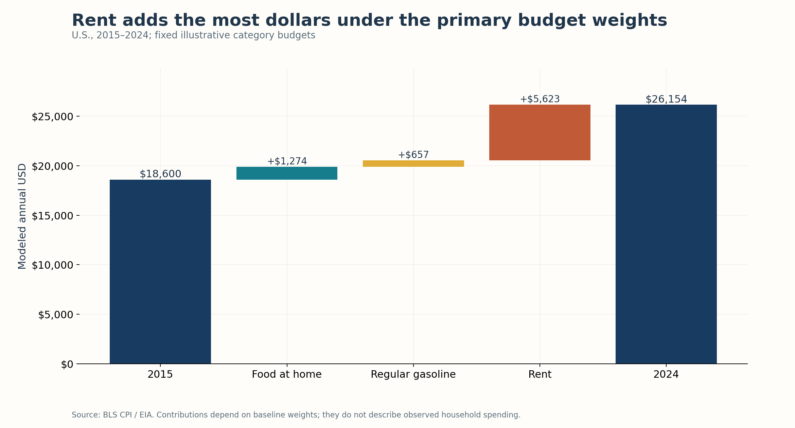
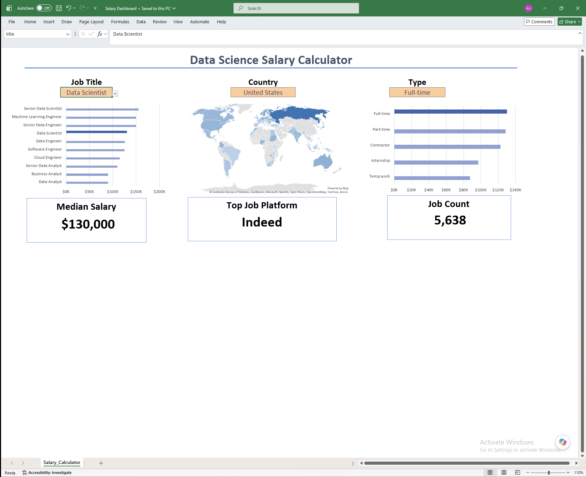
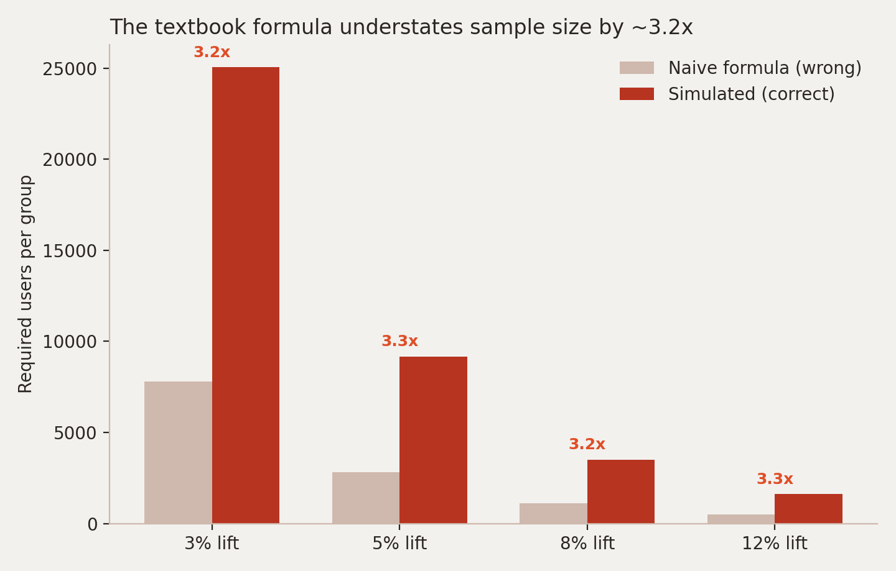
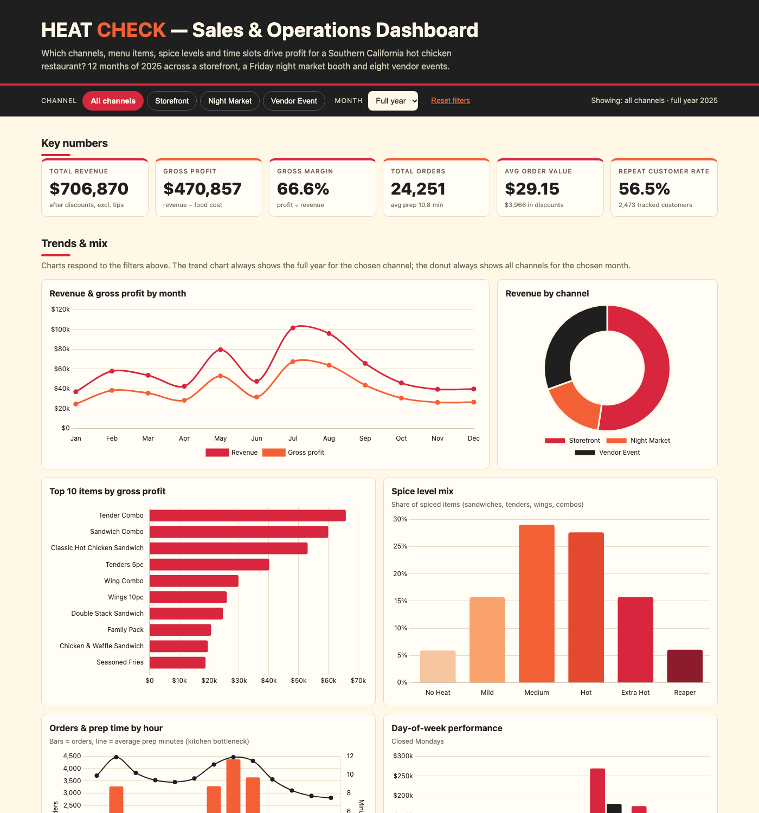

↗Illustrative model · public economic data01
American Affordability Index
What does a bigger paycheck actually buy?
Python · DuckDB SQL · pandas
Built a reproducible workflow connecting income, housing, and selected living costs. Explore the assumptions behind the headline, then test a different budget.
74.4%of the modeled 2015–2024 cost increase came from rent.
Context & limitations +
National, fixed-budget illustration; not a complete household budget or a result for every renter.
query_05.sqlSELECT skills,
demand_count,
avg_salary
FROM evidence
ORDER BY demand_count DESC;Question → Query → Quality check ↗Dataset audit · course-guided project02
SQL Job Market Analysis
More data. Better questions. Revised conclusions.
PostgreSQL · CTEs · data validation
Revisited five hiring-market questions across two dataset snapshots. Checked relationships, salary coverage, and ranking logic before interpreting the results.
2M+postings in the refreshed January 2023–October 2026 snapshot.
Context & limitations +
Only about 5% of all postings disclose annual salary. Skill salary averages describe that subset; job IDs are snapshot-local.

↗Interactive workbook · course-guided project03
Excel Salary Dashboard
A salary benchmark you can actually explore.
Excel · FILTER · XLOOKUP · dynamic arrays
Turned job-posting data into dropdown-driven salary comparisons by role, country, and employment type, using formulas and clear visual summaries.
32,672postings behind the workbook.
Context & limitations +
A formula-driven workbook built through Luke Barousse’s course. Disclosed salaries can carry selection bias; no PivotTables or VBA.

↗Simulation · real MovieLens baseline04
Recommendation Nudge A/B Test
Would you trust the power calculator?
Python · SciPy · statsmodels
Compared a closed-form sample-size estimate with a simulation of a skewed engagement metric. Validated false-positive behavior and empirical power.
3.2×the naive sample-size estimate under the tested simulation assumptions.
Context & limitations +
Real baseline data, injected synthetic treatment. This is a simulation, not a measured product improvement.

↗Synthetic restaurant operations05
Heat Check: Sales Operations
From the dinner rush to a staffing decision.
Python · SQL · Excel · Chart.js
Examined channel performance, staffing, and customer cohorts in an operations dashboard inspired by the decisions a restaurant team makes every week.
15SQL queries connecting operations questions to evidence.
Context & limitations +
Synthetic business data. Any potential savings are modeled opportunities, not realized financial results.
AWS / ARCHITECTUREInternet
↓Load balancer
↙ ↘Private A · Private B
Two zones. Clear boundaries. ↗Architecture project · technical foundation06
AWS Production Networking
Understanding the systems behind the data.
AWS · VPC · ALB · Auto Scaling
Designed a production-style network with public and private subnets, load balancing, and multi-zone architecture. A complementary perspective on how reliable systems fit together.
Multi-AZarchitecture with a documented separation of network responsibilities.
Context & limitations +
Personal architecture project; not a claim of a production deployment or client infrastructure.